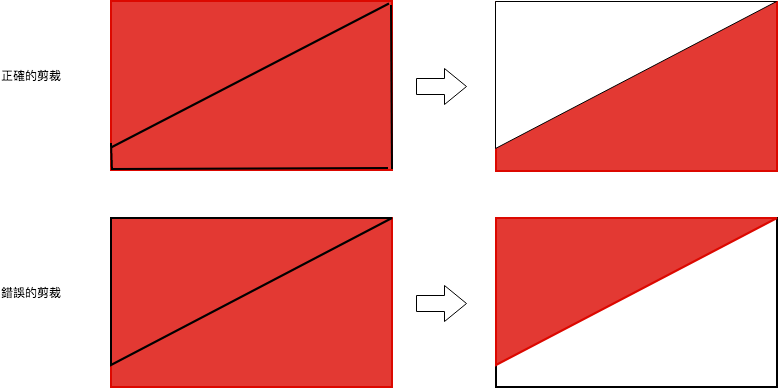

Android Studio 環境配置
- Android 6.0
- minSdkVersion 21
- targetSdkVersion 27
- Language：Kotlin
- 第三方使用套件：無
程度需求
- 對 kotlin 有一定程度了解
- 對 Android 客製化 UI 有基礎認識
完成效果
廢話不多說，先看個效果，來了解一下我們會做出什麼東西來！

正式開始
開始吧！ 首先：
建立class 繼承 View，並依照規範將三個需要實作的建構子一起建立出來(我的習慣是使用constructor)
1 | class UIVolumeView : View { |
繼承 View 要實作的細節和流程就不再多敘述，這裡僅實作onDraw方法，請先將 onDraw 方法覆寫
1 | override fun onDraw(canvas: Canvas?) { |
然後建立兩個 class member，用處之後說明：
1 | class UIVolumeView : View { |
以上是最後完成的程式碼，build之後沒有錯誤的話，就成功了第一步
UI 設計概念
前言
再談設計概念之前，先來看一下這張完成圖片，相信有開發經驗的工程師們，一定都會得到UI/UX 設計師給的設計稿或切圖，以下這張圖應該算是張元件的完成圖：
當得到一張元件圖之後，就得要開始思考，怎麼樣做出這個元件，怎麼樣能夠真正呈現在手機上又能符合設計師要的動畫效果。
其實做法有很多種，我當初也想了幾個方式來做決定：
- 使用 LevelListDrawable，設置總共25張圖片，分25個等級去置換
- 繼承 ProgressBar 客製化
- 繼承 View，自己用 Canvas 實作
第一個方法，比較快速簡單，但是要切25張圖，我不會切，而且這個也不是公司案子，是不能動用設計師的，所以沒採用。
第二個方法，沒有找到如何客製化 ProgressBar 的最佳方式，試了很久還是不成功，放棄。
最後只剩第三個方法，老實說我真的滿懶得，所以第三個方法不到最後不做，因為這真的很難做R～～
分析
既然選擇第三個方式，那就開始分析吧！ 我個人分析的習慣都是從大到小、外往內、上往下的概念分析：
- 圖層 (外往內分析)：
- 整個畫布：
- 三角形裁減區塊（之後說明）：
- 底部刻度圖：
- 最後一張上面所說的，兩個元件疊在一起的意思是：我其實是做了一個class ui，重複用了兩個，一個當前景、一個當背景
- 細節（由大到小分析）：
- 這裡描述著，每一個刻度，有分有顏色和沒顏色的部分，沒顏色的部分我稱它為：Gap
Canvas
Android Canvas，當繼承 View 之後，在 onDraw 的 call back 中就會接收到。
只要當View建立完成，或是呼叫了 invaildate()，都會進入 onDraw 方法，用意在於叫開發者自行實作自己想要的結果。我的實作重點就在這個畫布上，它是完成這個UI的最重要的物件。
當然我們一樣先來看一下，下面這張圖：
這個樣式就是上面分析時所講到的第二點，三角形裁減區塊沒有使用的時候。
要畫出等級刻度，其實很簡單，使用 drawPath 就可以了，example：（畫一條紅線）
1 | val paint = Paint() |
簡單的範例一下，只是說明，要做出等級刻度，使用 canvas.drawPath 即可，這就是實作這個ui layout的第一步。
實作邏輯
流程
先來看張流程圖：
說明一下其中兩大元件：
- UIVolumeView：我們自行客製化的元件，下面開始慢慢補完程式
- SeekBar：Android 的 Slider，用來控制 0 ~ 100 的進度，要demo UIVolumeView 所用
流程圖中，SeekBar 接收到改變值，使用 setLevel改變 UIVolumeView的等級，一接收到就 invaildate() 重刷畫面，然後結束。之後反覆循環這個動作，UIVolumeView就會不停變化，但沒有動畫，動畫效果後面會提到。
流程圖的流程是裁減然後draw但我要講解的順序是反過來的，我會先講 drawPath 再回頭講三角形剪裁，這麼說明的原因其實是因為這裡的裁減邏輯跟原始畫出來的圖會有點關聯，先講解刻度的畫法會對裁減比較有感覺。
依 0 ~ 100 的等級畫出刻度
首先，找出刻度和刻度間隙的寬度，也就是每一刻的寬和每一刻中間的白色寬度。通過完成圖分析結果，發現每一刻對間隙，比值是 2:1 寬度，換句話說就是兩個間隙的寬度剛好等於一刻。
就以此規則定義刻度和間隙的寬度吧，但是我們不能寫死寬度的計算，因此要先定義整個主圖層要畫多少刻，建立以下規格：
- 25刻，一刻4%
- 間隙總共：25 - 1 = 24
- 套用2:1的規則，25 x 2 + 24 = 74 <—- 74 就是我們要算得的線的結果
用圖來詳細拆分一下什麼是 2:1
那為什麼要用這種分法呢？ 因為我這裡畫線的邏輯是用x跳格，然後一條線的寬度是 (view.width / 74 ) * 2 之後畫一條直線到 view.height 也就是最底部的 y。
一樣用圖來解說：
先宣告幾個 property，然後寫一下 init 方法，讓畫筆有預設顏色：
1 | //初始化設定 |
level 這裡使用了blocking field，限定0到100才可以加入，然後接著寫 for loop 畫線的核心程式碼：
1 | //current 跟著 0 ~ 100 的 level 在畫線的時候要/4，因為這樣畫刻度的次數才是正確的 |
path 是 class 全域變數，每次 onDraw 都 reset 重建
每次 loop 都把建好的 path 串起來
最後使用 drawPath畫出，一次畫比較省力
從這裡就可以看到 for loop中，移動 x 時的計算，x 的移動其實是每次移動三格，除以四是為了畫出25刻，等於每四級畫一刻，不過這段程式碼中做了一個判斷，就是 i 只 loop 到 level，因為level是動態給予的，所以每次畫都只畫到level為止。(當然，level = 100 ，就畫到滿)
接著把這段程式碼複製貼上到 UIVolumeView裡，完成此一階段。如果想先看到結果，也可以在 onDraw 的地方，呼叫這個fun，就會看到沒有裁減的結果了！
1 | override fun onDraw(canvas: Canvas?) { |
剪裁三角形
接著來說明一下，為何要裁減三角形。如果你有先把level隨意設定一下，然後執行 drawAll() 看看效果，你會得到一個正方形的刻度顯示，此時就要開始思考，要如何才能得到下面這個最後的結果？
這個無法切圖，但我們可以剪裁，Canvas都有剪裁的功能可以使用。剪裁的概念範圍很大，在這裡僅使用 clipPath 做說明，其他的用法不是很了解，所以也不多做說明。
首先，先說明clip 剪裁是剪裁出新畫布，也就是說：剪出來的區域是可以看得到的區域，要記得這個規則！，拿下圖來說明，我畫了一個全紅色的正方形，我對中間剪了一個正方形出來，會是這樣顯示：
剪裁後，白色的部分都變成是顯示不出來的區域，只有裁出來的那塊區域才能顯示紅色！
所以，如果我們想剪裁出完成品，並不是剪裁三角形，而是剪裁一個不規則的四邊形，這也是為什麼我是使用 clipPath 的主要原因，一樣使用圖解來解說！
圖中黑色的線，就是圈起來想要剪掉的區塊：

那為什麼這裡所說的是剪裁三角形，而不是剪裁不規則四邊形呢？其實因為以圖層來看，人正常的思考邏輯其實是剪裁三角形，白話的說是我圈出一個區域，這個區域是我不要的。
而clipPath是圈出一個區域，這個區域是我要的。在實作的時候有看到 clipOutPath這個方法，但是這個方式是 API 26 才加入的，
有可能這個的使用方式就是反過來的，不深究囉。
剪裁邏輯，就直接看code，只是圈了四個點，然後形成一個四邊形之後剪裁而已：
1 | //每次都剪裁三角形，這樣可以維持 postInvalidateDelayed 的動畫效果 |
把這段程式碼放到 onDraw() , drawAll之前，像以下：
1 | override fun onDraw(canvas: Canvas?) { |
動畫效果
這個效果當初弄了很久，嘗試了很多笨方法，包括直接hard code寫了一大堆邏輯，還是使用了 postInvaildateDealy 不斷重複呼叫，都覺得很複雜。
思考了幾天，終於找到一個很適合的方法，就是使用 ObjectAnimator。
ObjectAnimator 的底層原理呢，我也不知道，這裡簡單說明比較淺的概念。ObjectAnimator 繼承 ValueAnimator，增進其用法，可以直接使用屬性名稱，進行動畫變化，算是一個滿快速上手的API。
依循這個原則，我嘗試將level當成是 ObjectAnimator 內可以映射的屬性，發現確實可以這麼使用，原來 ObjectAnimator 會根據設定好的參數、插值器，重複呼叫class 中的 setter，以這個UIVolumeView來說，就是不斷的呼叫 setLevel。
然後我在 setLevel (因為是kt，其實程式碼已經寫在field下面了)，不斷使用 postInvalidate：
1 | var level: Int = 0 |
如此作法，就會引發 onDraw 重複呼叫，像是一幀幀的動畫執行一樣很 smooth ~，ObjectAnimator 應該是管理了這個 level 屬性值，如果快速重複呼叫，也不會有卡頓的動畫感，而是快速增加又快速減少，通過 log 我就有發現，當 slider 快速的拉大拉小時，這個 setLevel 呼叫的時機點順序執行。
在 UIVolumeView 裡建立一個public fun，提供給外部呼叫：
1 | fun animateLevel(level: Int) { |
然後整個class 完成，就會像以下：
1 | class UIVolumeView : View { |
UI Layout
打開 activtiy_main.xml，直接貼上，ui的class package 記得更改！
1 | <?xml version="1.0" encoding="utf-8"?> |
打開 MainActivtiy或隨便你要放UI的 Activtiy都行，貼上以下實作程式碼：
1 | //這個view 就是要來輸出等級的view |
val backScale = findViewById
(R.id.volumeBackScale) 用來當底圖
backScale.level = 100
直接設定 100% , 輸出淺灰色的刻度
onWindowFocusChanged
當hasFocus的時候 UIVolumeView 才會有真正的 width，用該width 對 volume 設定漸層色，要不要設定隨便，總之就比較好看
以上，就全部都完成了一開始我們想要達成的UI效果，希望大家看得到效果！！